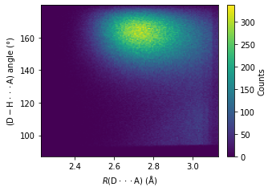
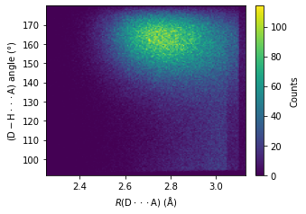
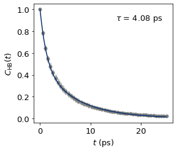
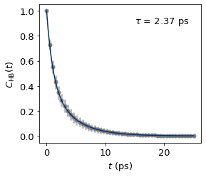

H bond recognition and lifetime analysis#
Import packages#
import json
from cage_data import cage1_info
from fishmol import trj, data, dimer, style
from fishmol.utils import retrieve_symbol
def pop_C(TFAs):
for TFA in TFAs:
[TFA.pop(key) for key in list(TFA.keys()) if key == "C1" or key == "C2"] # keep F and O in TFAs only for H-bond analysis
return TFAs
waters = cage1_info.waters
TFAs = cage1_info.TFAs
phenols = cage1_info.phenols
amines = cage1_info.amines
TFA_F_Os = pop_C(TFAs)
atoms_dict = waters + phenols + amines + TFA_F_Os
cell = cage1_info.cell
donors, acceptors = dimer.find_d_a(atoms_dict = atoms_dict)
d_a_pairs, d_h_a_pairs = dimer.pair_d_a(donors = donors, acceptors = acceptors)
Done! 40 donors and 40 acceptors were found!
Acceptors:
[{'O': 14}, {'O': 17}, {'O': 143}, {'O': 146}, {'O': 272}, {'O': 275}, {'O': 401}, {'O': 404}, {'F1': 0, 'F2': 1, 'F3': 2, 'O1': 3, 'O2': 4}, {'F1': 7, 'F2': 8, 'F3': 9, 'O1': 10, 'O2': 11}, {'F1': 129, 'F2': 130, 'F3': 131, 'O1': 132, 'O2': 133}, {'F1': 136, 'F2': 137, 'F3': 138, 'O1': 139, 'O2': 140}, {'F1': 258, 'F2': 259, 'F3': 260, 'O1': 261, 'O2': 262}, {'F1': 265, 'F2': 266, 'F3': 267, 'O1': 268, 'O2': 269}, {'F1': 387, 'F2': 388, 'F3': 389, 'O1': 390, 'O2': 391}, {'F1': 394, 'F2': 395, 'F3': 396, 'O1': 397, 'O2': 398}]
Donors:
[{'O': 14, 'H1': 15}, {'O': 14, 'H2': 16}, {'O': 17, 'H1': 18}, {'O': 17, 'H2': 19}, {'O': 143, 'H1': 144}, {'O': 143, 'H2': 145}, {'O': 146, 'H1': 147}, {'O': 146, 'H2': 148}, {'O': 272, 'H1': 273}, {'O': 272, 'H2': 274}, {'O': 275, 'H1': 276}, {'O': 275, 'H2': 277}, {'O': 401, 'H1': 402}, {'O': 401, 'H2': 403}, {'O': 404, 'H1': 405}, {'O': 404, 'H2': 406}, {'O': 24, 'H': 25}, {'O': 411, 'H': 412}, {'O': 153, 'H': 154}, {'O': 282, 'H': 283}, {'N': 410, 'H1': 284}, {'N': 410, 'H2': 285}, {'N': 409, 'H': 128}, {'N': 407, 'H1': 28}, {'N': 407, 'H2': 29}, {'N': 152, 'H1': 26}, {'N': 152, 'H2': 27}, {'N': 149, 'H1': 286}, {'N': 149, 'H2': 287}, {'N': 151, 'H': 386}, {'N': 280, 'H': 257}, {'N': 278, 'H1': 157}, {'N': 278, 'H2': 158}, {'N': 281, 'H1': 413}, {'N': 281, 'H2': 414}, {'N': 23, 'H1': 155}, {'N': 23, 'H2': 156}, {'N': 22, 'H1': 515}, {'N': 20, 'H1': 415}, {'N': 20, 'H2': 416}]
Donor and acceptor is the same atom: O 14, skipped.
Donor and acceptor is the same atom: O 14, skipped.
Donor and acceptor is the same atom: O 17, skipped.
Donor and acceptor is the same atom: O 17, skipped.
Donor and acceptor is the same atom: O 143, skipped.
Donor and acceptor is the same atom: O 143, skipped.
Donor and acceptor is the same atom: O 146, skipped.
Donor and acceptor is the same atom: O 146, skipped.
Donor and acceptor is the same atom: O 272, skipped.
Donor and acceptor is the same atom: O 272, skipped.
Donor and acceptor is the same atom: O 275, skipped.
Donor and acceptor is the same atom: O 275, skipped.
Donor and acceptor is the same atom: O 401, skipped.
Donor and acceptor is the same atom: O 401, skipped.
Donor and acceptor is the same atom: O 404, skipped.
Donor and acceptor is the same atom: O 404, skipped.
Unique donoar-acceptor/donoar-hydrogen-acceptor combinations: 1904
Sample donor-acceptor pair: [{'O': 14}, {'O': 17}]
Sample donor-hydrogen-acceptor pair: [{'O': 14, 'H1': 15}, {'O': 17}]
import numpy as np
%%time
traj = trj.Trajectory(timestep = 5, data = "/nobackup/rhtp48/data_ana/cage1-500K.xyz", index = ":", cell = cell)
CPU times: user 2min 12s, sys: 3.19 s, total: 2min 15s
Wall time: 2min 16s
traj.wrap2box()
<fishmol.trj.Trajectory at 0x7f61b03ca4f0>
We simulated a large system with 516 atoms at very long time scale (256.9 ps), and the recognition of H bonds can take hours.
%%time
hbonds = dimer.res_h(d_a_pairs = d_a_pairs, d_h_a_pairs = d_h_a_pairs, frames = traj.frames)
CPU times: user 3h 38min 2s, sys: 3h 59min 28s, total: 7h 37min 30s
Wall time: 2h 35min 1s
with open("/nobackup/rhtp48/data_ana/results/cage1-hbonds-500K.json", "w") as json_file:
json.dump(hbonds, json_file)
json_file.close()
\(R(\text{D} \cdot \cdot \cdot \text{A}) - \angle \text{D} - \text{H} \cdot \cdot \cdot \text{A}\) heatmap#
All H bonds#
# Run this if you are loading data from saved json files
# Opening JSON file
f = open("/nobackup/rhtp48/data_ana/results/cage1-hbonds-500K.json")
# returns JSON object as a dictionary
hbonds = json.load(f)
# Iterating through the json list
nhbonds=[]
d_h_a_ang = []
r_d_a = []
for hbond in hbonds:
nhbonds.append(hbond["n_hbonds"])
a = hbond["hbonds"]
for element in a:
r_d_a.append(element["R(D-A)"])
d_h_a_ang.append(element["DHA_ang"])
import matplotlib.pyplot as plt
_, ax =plt.subplots(figsize = (4.6, 3.2), constrained_layout = True)
heatmap, xedges, yedges = np.histogram2d(np.array(r_d_a, dtype = float), np.array(d_h_a_ang, dtype = float), bins=150)
extent = [xedges[0], xedges[-1], yedges[0], yedges[-1]]
im = ax.imshow(heatmap.T, extent=extent, origin='lower', aspect = "auto")
cbar = ax.figure.colorbar(im, ax = ax)
cbar.ax.set_ylabel("Counts", rotation=90, labelpad = 8.5, va="center", ha ="center")
ax.set_xlabel("$R\mathrm{(D\cdot \cdot \cdot A)}$ ($\mathrm{\AA}$)")
ax.set_ylabel("$\mathrm{(D-H\cdot \cdot \cdot A)}$ angle (°)")
plt.savefig("test/cage1-all_hbonds_angle_r_heatmap.jpg", dpi = 600)
plt.show()

H bonds with the participance of water molecules#
waters
({'O': 14, 'H1': 15, 'H2': 16},
{'O': 17, 'H1': 18, 'H2': 19},
{'O': 143, 'H1': 144, 'H2': 145},
{'O': 146, 'H1': 147, 'H2': 148},
{'O': 272, 'H1': 273, 'H2': 274},
{'O': 275, 'H1': 276, 'H2': 277},
{'O': 401, 'H1': 402, 'H2': 403},
{'O': 404, 'H1': 405, 'H2': 406})
water_O = [water["O"] for water in waters]
water_O
[14, 17, 143, 146, 272, 275, 401, 404]
Filter the H bonds resolved, keep those with the participance of a water molecules only#
def has_common(a, b):
a_set = set(a)
b_set = set(b)
if (a_set & b_set):
return True
else:
return False
has_water_hbonds = []
for i, frame in enumerate(hbonds):
hbonds = []
for hbond in frame["hbonds"]:
d_h_a = [*hbond["donor"].values(), *hbond["acceptor"].values()]
if has_common(d_h_a, water_O):
hbonds.append(hbond)
has_water_hbonds.append({f"frame": i, "n_hbonds": len(hbonds), "hbonds": hbonds})
has_water_hbonds[0]["hbonds"]
[{'donor': {'O': 24, 'H': 25},
'acceptor': {'O': 401},
'R(D-A)': 2.726292124271186,
'DHA_ang': 159.98746612853796,
'r(D-H)': 0.9967552553430291},
{'donor': {'O': 411, 'H': 412},
'acceptor': {'O': 14},
'R(D-A)': 2.726051523249053,
'DHA_ang': 160.5043633242915,
'r(D-H)': 1.001683650666012},
{'donor': {'O': 153, 'H': 154},
'acceptor': {'O': 272},
'R(D-A)': 2.725839022339603,
'DHA_ang': 160.58162299841513,
'r(D-H)': 1.0020543270949314},
{'donor': {'O': 282, 'H': 283},
'acceptor': {'O': 143},
'R(D-A)': 2.7011264954331087,
'DHA_ang': 161.4098213827206,
'r(D-H)': 0.9996765075384993},
{'donor': {'N': 410, 'H2': 285},
'acceptor': {'O': 404},
'R(D-A)': 2.864580984838505,
'DHA_ang': 164.3774626679764,
'r(D-H)': 1.032222888114154},
{'donor': {'N': 152, 'H2': 27},
'acceptor': {'O': 146},
'R(D-A)': 2.8591792887230647,
'DHA_ang': 163.56178179798138,
'r(D-H)': 1.032487326611596},
{'donor': {'N': 281, 'H2': 414},
'acceptor': {'O': 275},
'R(D-A)': 2.8287980881769776,
'DHA_ang': 163.15582670406786,
'r(D-H)': 1.035511301914456},
{'donor': {'N': 23, 'H2': 156},
'acceptor': {'O': 17},
'R(D-A)': 2.8623624040188216,
'DHA_ang': 164.02453218550465,
'r(D-H)': 1.035142855861238}]
with open("/nobackup/rhtp48/data_ana/results/cage1-has-water-hbonds-500K.json", "w") as json_file:
json.dump(has_water_hbonds, json_file)
json_file.close()
# Iterating through the json list
nhbonds=[]
d_h_a_ang = []
r_d_a = []
for hbond in has_water_hbonds:
nhbonds.append(hbond["n_hbonds"])
a = hbond["hbonds"]
for element in a:
r_d_a.append(element["R(D-A)"])
d_h_a_ang.append(element["DHA_ang"])
import matplotlib.pyplot as plt
_, ax =plt.subplots(figsize = (4.6, 3.2), constrained_layout = True)
heatmap, xedges, yedges = np.histogram2d(np.array(r_d_a, dtype = float), np.array(d_h_a_ang, dtype = float), bins=150)
extent = [xedges[0], xedges[-1], yedges[0], yedges[-1]]
im = ax.imshow(heatmap.T, extent=extent, origin='lower', aspect = "auto")
cbar = ax.figure.colorbar(im, ax = ax)
cbar.ax.set_ylabel("Counts", rotation=90, labelpad = 8.5, va="center", ha ="center")
ax.set_xlabel("$R\mathrm{(D\cdot \cdot \cdot A)}$ ($\mathrm{\AA}$)")
ax.set_ylabel("$\mathrm{(D-H\cdot \cdot \cdot A)}$ angle (°)")
plt.savefig("test/cage1-has_water_hbonds_angle_r_heatmap.jpg", dpi = 600)
plt.show()

H bond lifetime#
All H bonds#
c1_t, c1_C_ts_mean, c1_C_ts_error = dimer.auto_cor(nframes = 5000, skip = 100, data = "/nobackup/rhtp48/data_ana/results/cage1-hbonds-500K.json", index = ":")
c1_C_ts_mean
array([1. , 0.78365306, 0.64408114, 0.54720111, 0.47499348,
0.41793104, 0.37138124, 0.33213615, 0.29868346, 0.27004558,
0.24516531, 0.22360301, 0.20444858, 0.18752604, 0.17225393,
0.15881247, 0.14681956, 0.13595855, 0.12599585, 0.11686875,
0.10862518, 0.10111938, 0.09427445, 0.08796273, 0.08226667,
0.07685842, 0.0719501 , 0.06748487, 0.06337391, 0.05956119,
0.05602405, 0.05279543, 0.04978264, 0.0470523 , 0.04447146,
0.04204273, 0.03980548, 0.03775526, 0.0358452 , 0.03403376,
0.0323862 , 0.03082745, 0.02929539, 0.02784549, 0.02648702,
0.02520094, 0.02406221, 0.02294833, 0.02187818, 0.02087655])
c1_x_fit, c1_y_fit, c1_params = dimer.bi_exp_fit(c1_t, c1_C_ts_mean, amp1 = 0.35922814, tau1 = 5.98152426, tau2 = 1.22001)
c1_tau = dimer.calc_tau(*c1_params)
The fitted biexponential function paramters are:
A: 0.47960248157210766, tau1: 7.086391337617406, tau2: 1.3125274137234557
The H-bond lifetime is 4.081686879882692 ps.
fig, ax = plt.subplots()
ax.errorbar(c1_t, c1_C_ts_mean, yerr = c1_C_ts_error, fmt='o', color="tab:grey",
ecolor='#bdbdbd', elinewidth=3, capsize=0, zorder = 0);
ax.plot(c1_x_fit, c1_y_fit, color = "#08306b", zorder = 1)
ax.text(15.0, 0.9, r"$\tau$ = %.2f ps"%c1_tau)
# ax.xaxis.set_major_locator(MultipleLocator(5))
ax.set_xlabel("$t$ (ps)")
ax.set_ylabel("$C_{\mathrm{HB}}(t)$")
plt.savefig("test/cage1_all_hbond_lifetime_500K.jpg", dpi = 600)
plt.show()

H bonds formed with a water molecule#
c1_t, c1_C_ts_mean, c1_C_ts_error = dimer.auto_cor(nframes = 5000, skip = 100, data = "/nobackup/rhtp48/data_ana/results/cage1-has-water-hbonds-500K.json", index = ":")
c1_C_ts_mean
array([1. , 0.73088204, 0.55191651, 0.43177474, 0.3470527 ,
0.28622472, 0.23942545, 0.20259308, 0.17290821, 0.14830441,
0.12817609, 0.11123238, 0.09693985, 0.08468134, 0.0743088 ,
0.06540281, 0.05769645, 0.05130411, 0.04565903, 0.0402614 ,
0.03559201, 0.03155476, 0.02801979, 0.02469743, 0.02212224,
0.019557 , 0.01733431, 0.01537476, 0.01366477, 0.01201793,
0.01050928, 0.00920126, 0.0080454 , 0.00710689, 0.00624038,
0.00545512, 0.00482987, 0.00426726, 0.00380215, 0.00347118,
0.00321754, 0.00294797, 0.00266208, 0.00236212, 0.00215375,
0.00197273, 0.00181923, 0.00162575, 0.00146898, 0.00135168])
c1_x_fit, c1_y_fit, c1_params = dimer.bi_exp_fit(c1_t, c1_C_ts_mean, amp1 = 0.35922814, tau1 = 5.98152426, tau2 = 1.22001)
c1_tau = dimer.calc_tau(*c1_params)
The fitted biexponential function paramters are:
A: 0.44937016787700423, tau1: 3.9978218254149307, tau2: 1.0343073313291071
The H-bond lifetime is 2.3660223370423887 ps.
fig, ax = plt.subplots()
ax.errorbar(c1_t, c1_C_ts_mean, yerr = c1_C_ts_error, fmt='o', color="tab:grey",
ecolor='#bdbdbd', elinewidth=3, capsize=0, zorder = 0);
ax.plot(c1_x_fit, c1_y_fit, color = "#08306b", zorder = 1)
ax.text(15.0, 0.9, r"$\tau$ = %.2f ps"%c1_tau)
ax.set_xlabel("$t$ (ps)")
ax.set_ylabel("$C_{\mathrm{HB}}(t)$")
plt.savefig("test/cage1_has_water_hbond_lifetime_500K.jpg", dpi = 600)
plt.show()
